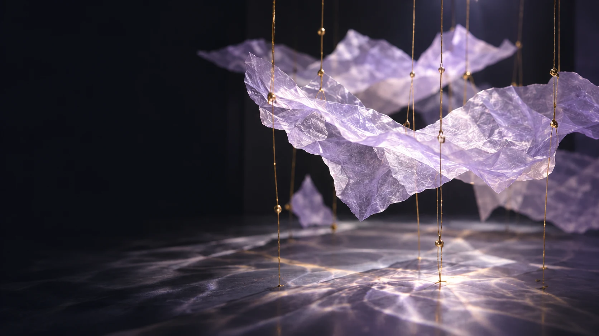

Resonance
between
image
& sound.
A place for looking, listening, and trying something new.
Begin listening
Website feature · AI-assisted
Touch. Listen. Leave a trace.
Created for this website with AI assistance. It is separate from Claire’s work and uses a credited third-party sample.
- 01 / PluckTouch any one of the twenty-one strings. A note becomes a line of light.
- 02 / Bend & sweepHold and move sideways to bend; sweep up or down across the strings to play a phrase.
- 03 / ListenLift your hand. Let the sound and its trace settle.
Enable JavaScript to play this sound-and-image study. A touch would make a note and luminous trace; a held sideways gesture would bend both.
Sound: guzheng single-note sample by nanliu_music · CC0, trimmed and pitch-shifted. Not Claire’s recording. Background: AI concept image.